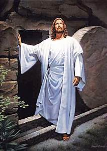

Easter-The Holiest Festivial to the World
|
|
Easter-The Holiest Festivial to the World |
|
Home | Contact Us | feedback |
|
Enjoy The Moments.... |
Easter:
|
|
 What is Easter mainly about?
However, Easter did not always symbolize Christ's resurrection from the dead and the meaning of Easter was quite different than what Christians celebrate today. The feast day of Easter was originally a pagan celebration of renewal and rebirth. Celebrated in the early spring, it honored the pagan Saxon goddess Eastre. When the early missionaries converted the Saxons to Christianity, the holiday, since it fell around the same time as the traditional memorial of Christ's resurrection from the dead, was merged with the pagan celebration, and became know as Easter. The meaning of Easter was also changed to reflect its new Christian orientation.
Today, the meaning of Easter, for million of Christians, is that of honoring and recognizing Jesus Christ's resurrection from the dead, and His glorious promises of eternal life for all who believe in Him.
|
Home|Privacy Policey|Terms of Service|Feedback
2024 & copy Festivalis of India|All Rights Reseverved
Designed by Praveen kumar